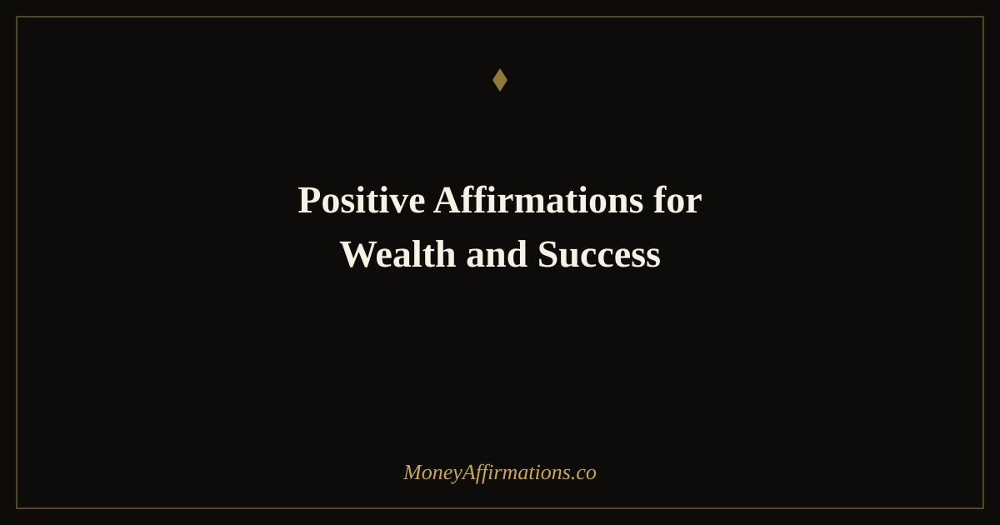

Positive Affirmations for Wealth and Success: 35 Powerful Statements

Wealth and success are not the same thing, but they grow from the same root: a clear, positive belief that you are capable of both and that you deserve both. The person who achieves professional success but never builds lasting wealth is often missing the financial self-concept that turns high earnings into lasting assets. The person who accumulates money but feels no sense of professional fulfilment is often missing the identity of someone who does meaningful, valued work. Positive affirmations for wealth and success work on both dimensions simultaneously, building the integrated belief system that produces a genuinely prosperous life.
These 35 affirmations address the full landscape of wealth and success — from financial confidence and income growth, to the belief in your professional value, to the identity of someone who builds lasting assets while doing work that matters. Used as a daily practice, they create the internal conditions from which both wealth and success become natural expressions of who you are.
What are positive affirmations for wealth and success?
Positive affirmations for wealth and success are present-tense statements that simultaneously target two interconnected sets of beliefs: financial self-worth (the conviction that you deserve to be wealthy) and professional self-efficacy (the conviction that you are capable of meaningful success). Together, they address the full psychological landscape of someone working toward a financially and professionally fulfilling life.
These affirmations are most effective when used alongside concrete financial and professional action — they amplify the effort you are already making rather than substituting for it. For the broader wealth-building mindset framework that these statements sit within, explore the full wealth affirmations collection.
35 positive affirmations for wealth and success
- I am wealthy, successful, and living a life that reflects the full extent of my capability.
- Wealth and success flow to me naturally because I create genuine value and I believe I deserve both.
- I am building the kind of success that lasts — grounded in real skill, real effort, and real financial discipline.
- My wealth grows every year because I invest in myself, in assets, and in the work I was meant to do.
- I am successful by my own definition — and my definition includes financial freedom and meaningful contribution.
- I attract the opportunities, the relationships, and the income streams that build lasting wealth.
- I deserve to be well paid for my work and I ask for what I am worth without guilt or hesitation.
- Success comes to me easily when I align my actions with my highest priorities every single day.
- I am building wealth strategically and every financial decision I make reflects that long-term thinking.
- I am a successful person — in my relationships, my finances, my work, and my sense of self.
- Positive financial outcomes follow me because I show up with excellence and I expect to be rewarded for it.
- My income reflects my value — and my value grows consistently with every skill I build and every action I take.
- I manage my wealth with wisdom, invest it with patience, and grow it with purpose.
- I release every old story about wealth being hard to achieve and replace it with the truth: it is available to me.
- My success is not luck — it is the result of consistent effort, clear intention, and deliberate skill-building.
- I am the kind of person who earns well, saves wisely, and builds wealth that lasts beyond a single generation.
- Positive energy around money and success is my natural state — I live and work from that place daily.
- I celebrate every financial milestone without minimising it — each one is evidence that the path is working.
- I am successful because I define success clearly, pursue it intentionally, and refuse to settle for less.
- My professional reputation attracts wealth — every person I help, every promise I keep, adds to it.
- I hold a clear and positive vision of my wealthy, successful future and I take steps toward it every day.
- Wealth and success are not in tension — they reinforce each other, and I build both with equal commitment.
- I am a positive force in every financial situation I encounter — confident, clear, and aligned with abundance.
- My net worth and my sense of fulfilment both increase every year because I refuse to trade one for the other.
- I attract mentors, partners, and opportunities that accelerate my path to wealth and success.
- I am fully worthy of financial success and I no longer require external permission to pursue it at full scale.
- Positive habits around money — saving, investing, learning, earning — are deeply embedded in who I am.
- I wake each morning knowing that today holds the potential to advance my wealth and my success in real ways.
- I am building something lasting — financially and professionally — and I am proud of every step of the journey.
- My wealth and my success are expressions of my values, my effort, and my commitment to living fully.
- I succeed at the goals that matter to me because I choose them carefully and pursue them relentlessly.
- Financial success is available to me in this lifetime — and I am claiming it with full conviction right now.
- I am a positive example of what wealth and success look like when they are built with integrity and purpose.
- Every day I take at least one action that moves me toward greater wealth or greater success or both.
- I live a wealthy, successful life — and I know it, feel it, and act from it in everything I do.
How to use these affirmations
Positive affirmations for wealth and success work best as an anchoring practice — a way of consistently returning to the identity and beliefs that support your financial and professional goals. Each morning, choose three affirmations from this list and speak them aloud with full presence before engaging with the demands of the day. If your practice is new, start with statements that feel genuinely believable rather than stretching too far. As your practice deepens, the more ambitious statements become increasingly natural.
Beyond the morning practice, use single affirmations as targeted interventions at key moments: before a salary conversation, before submitting a major proposal, before reviewing your investment portfolio, or before any interaction where you have historically felt less than your most confident financial self. These targeted applications are where affirmations produce the most immediate and measurable results — by changing the psychological state you bring to the exact moments that determine financial and professional outcomes.
The relationship between positive belief and financial outcomes
The research on positive self-concept and financial outcomes is extensive and consistent. People who carry genuinely positive beliefs about their financial capability and professional worth do not just feel better about money — they behave differently in ways that produce measurably superior financial outcomes. They negotiate more effectively, invest more consistently, price their work more accurately, and persist through setbacks with less erosion of confidence. Each of these behaviours is a direct financial lever.
The word "positive" in positive affirmations is not about forced optimism or denial of difficulty. It refers to the quality of the self-concept: one that is oriented toward capability, growth, and deserving rather than toward limitation, inadequacy, and unworthiness. Positive affirmations for wealth and success work precisely because they replace the negative financial self-concept — which most people have absorbed passively from their environment — with a deliberate, chosen one. Over weeks and months of consistent practice, the chosen self-concept becomes the automatic one, and the automatic one shapes every financial decision that follows.
Tips to make them work faster
- Start with the three that feel most true right now. Build conviction from a foundation that is already solid, then gradually incorporate the ones that feel like a stretch. Believable affirmations produce stronger neurological responses than implausible ones.
- Pair each morning session with one wealth-building or success-building action. Review an investment, send an important email, complete a task you have been deferring. Action and belief reinforce each other.
- Write your definition of wealth and success once, clearly. These affirmations work best when they are anchored to a specific vision. Know what wealthy and successful means to you — then use the affirmations to build the identity of that person.
- Notice and record every positive financial and professional event. Each win — however small — is evidence that the affirmations are already true. Documenting them builds the self-concept faster than affirmations alone.
- Review after 30 days. Compare where you started with where you are. The shift in language, expectation, and financial behaviour will be visible — and it will motivate the next 30 days.
Frequently Asked Questions
Why pair wealth and success in the same affirmations?
Wealth and success are deeply intertwined but psychologically distinct. Wealth refers to the accumulation of financial assets — money, investments, property. Success refers to the achievement of meaningful goals and the recognition that follows. Many people who accumulate wealth do not feel successful; many who achieve professional success do not build lasting wealth. Affirmations that address both simultaneously work on the integrated belief that you deserve and are capable of both — which is the complete picture of the financially and professionally fulfilled life most people want.
How do positive affirmations for wealth and success differ from generic positivity?
Generic positivity ('things will work out', 'stay positive') is passive and non-specific. Positive affirmations for wealth and success are active, identity-based statements about specific financial and professional beliefs — 'I create value and I am generously compensated for it', 'I build wealth consistently through deliberate action'. The specificity targets the exact beliefs that suppress financial and professional outcomes: imposter syndrome, undervaluing of contribution, fear of asking for more. Generic positivity does not address these; targeted affirmations do.
How quickly can I expect positive affirmations for wealth and success to produce results?
Psychological shifts typically begin within one to two weeks of consistent daily practice. These shifts — feeling more entitled to ask for what you are worth, feeling less anxiety around money and success, noticing more opportunities — precede the external results. Behavioural changes that produce measurable financial outcomes usually emerge over four to eight weeks of consistent practice. The timeline depends on the depth of the beliefs being replaced and the consistency of the practice. Daily spoken affirmations with genuine presence produce results significantly faster than occasional or passive reading.
Wealth and success are both available to you — and the daily practice that makes them inevitable starts here. Explore the full wealth affirmations collection for a complete set of statements supporting every dimension of your financial future.